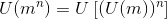

Ridicarea la putere cu exponent natural a unui număr natural
Considerăm numărul natural  oarecare și
oarecare și  .
.
Definiția NN17: Puterea a n-a a unui număr natural
Puterea a  -a a numărului natural se notează cu
-a a numărului natural se notează cu  și se definește ca fiind un produs repetat de ori al numărului natural :
și se definește ca fiind un produs repetat de ori al numărului natural :
 .
.
Vom citi la puterea , unde se numește baza puterii, iar se numește exponent.
Operația prin care se determină puterea unui număr natural cu exponent natural se numește ridicare la putere.
Proprietățile ridicării la putere a unui număr natural cu exponent natural
Propoziția NN18: Proprietăți
Fie  .
.
- prin convenție,
 ( la puterea
( la puterea  este
este  );
); - prin definiție,
 ;
;  nu are sens;
nu are sens; , oricare ar fi
, oricare ar fi  .
.
Exemple:
 ;
;  ;
;  .
. ;
;  ;
;  .
. ;
;  ;
;  .
.
Reguli de calcul cu puteri
Propoziția NN19: Reguli de calcul cu puteri
Considerăm numerele naturale  și
și  . Atunci:
. Atunci:
 ;
; ;
; ;
; ;
; .
.
Exemple:
- Folosind prima regulă de calcul cu puteri, avem:


- Folosind a doua regulă de calcul cu puteri, avem:

- Utilizând a treia regulă de calcul cu puteri, obținem:

- Dacă aplicăm a patra regulă de calcul cu puteri, vom avea:

- Aplicăm ultima regulă de calcul cu puteri din Propoziția NN19 și obținem:

Compararea și ordonarea puterilor
Fie  ,
,  .
.
Propoziția NN20:
Dacă puterile au aceeași bază și exponenți diferiți, atunci mai mare este puterea cu exponentul cel mai mare:
- dacă
 , atunci
, atunci  .
. - dacă
 , atunci atunci
, atunci atunci  .
.
Exponentul unei puteri ne spune de câte ori trebuie să înmulțim numărul respectiv cu el însuși.
De aceea, dacă avem două puteri cu exponenți diferiți, cu cât exponentul este mai mare, cu atât numărul care are exponentul respectiv va fi mai mare.
Exemple:
Inegalitatea de mai sus are loc, deoarece numărul obținut prin înmulțirea lui  cu el însuși de
cu el însuși de  ori este mai mic decât numărul obținut prin înmulțirea lui cu el însuși de
ori este mai mic decât numărul obținut prin înmulțirea lui cu el însuși de  ori:
ori:
 și
și
 .
.
Cum  , avem că
, avem că  .
.
Inegalitatea de mai sus are loc, deoarece înmulțind pe cu el însuși de ori obținem un număr mai mare decât :
 și
și
 .
.
Cum  , avem că
, avem că  .
.

Inegalitatea de mai sus are loc, deoarece obținem un număr mai mare dacă înmulțim pe cu el însuși de treizeci și șapte de ori decât dacă îl înmulțim doar de treizeci și cinci de ori.

Inegalitatea de mai sus are loc, deoarece  înmulțit de cinci ori cu el însuși este mai mare decât dacă îl înmulțim de două ori.
înmulțit de cinci ori cu el însuși este mai mare decât dacă îl înmulțim de două ori.
Propoziția NN21:
Dacă puterile au baze diferite și exponenți egali, atunci mai mare este puterea cu baza mai mare:
- dacă
 , atunci
, atunci  ;
; - dacă , atunci
 .
.
Exemple:
 , deoarece și implicit, înmulțit cu el însuși de patru ori va fi mai mic decât
, deoarece și implicit, înmulțit cu el însuși de patru ori va fi mai mic decât  înmulțit cu el însuți de patru ori;
înmulțit cu el însuți de patru ori; , deoarece
, deoarece  și implicit, înmulțit cu el însuși de trei ori va fi mai mare decât înmulțit cu el însuși de trei ori.
și implicit, înmulțit cu el însuși de trei ori va fi mai mare decât înmulțit cu el însuși de trei ori. , deoarece
, deoarece  și implicit,
și implicit,  înmulțit cu el însuși de patruzeci și patru de ori va fi mai mic decât
înmulțit cu el însuși de patruzeci și patru de ori va fi mai mic decât  înmulțit cu el însuși de patruezi și patru ori.
înmulțit cu el însuși de patruezi și patru ori.
Observație:
Dacă puterile au baze diferite și exponenți diferiți, atunci se aduc puterile la aceeași bază sau la același exponent după care se compară urmând regulile precedente.
Pătratul și cubul unui număr natural
Definiția NN22: Pătratul și cubul unui număr natural
Fie .
- Se numește pătratul unui număr natural puterea a doua a numărului . Notăm
 și citim pătrat.
și citim pătrat. - Se numește cubul unui număr natural puterea a treia a numărului . Notăm
 și citim la cub.
și citim la cub.
Definiția NN23: Pătratul perfect al unui număr natural
Se numește pătrat perfect orice număr natural care se scrie ca și pătratul unui alt număr natural.
Deci este pătrat perfect dacă există  astfel încât
astfel încât  .
.
Primele  de pătrate perfecte sunt:
de pătrate perfecte sunt:
Observație:
Ultima cifră a unui pătrat perfect poate fi o cifră din mulțimea  .
.
Aceasta este o modalitate de a demonstra dacă un număr nu este pătrat perfect.
Dacă ultima sa cifră diferă de  sau
sau  , atunci numărul nu este pătrat perfect.
, atunci numărul nu este pătrat perfect.
Notăm cu  ultima cifră a numărului natural și
ultima cifră a numărului natural și  ultima cifră a numărului natural .
ultima cifră a numărului natural .
Propoziția NN24: Proprietățile ultimei cifre a unui pătrat perfect
Avem:
 ;
; ;
;- .
Exemplu:
Numărul  nu este pătrat perfect, deoarece ultima sa cifră este .
nu este pătrat perfect, deoarece ultima sa cifră este .